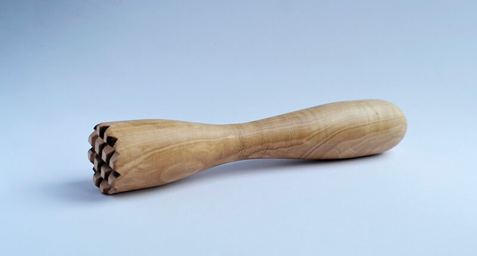

Carousel
A slideshow component for cycling through elements (images or slides of text) like a carousel.
Around component
Make sure to link to Tiny Slider css and js files in your document: vendor/tiny-slider/dist/tiny-slider.css and vendor/tiny-slider/dist/min/tiny-slider.js. Use this page as a reference.
You can alter carousel look and behaviour via modifier CSS classes and flexible data API.
Basic HTML structure:
<div class="tns-carousel-wrapper">
<div class="tns-carousel-inner" data-carousel-options='{}'>
<!-- Carousel slides here -->
</div>
</div>Modifier classes:
tns-controls-center- Center align controls (prev/next buttons).tns-controls-left- Left align controls (prev/next buttons).tns-controls-inside- Position controls (prev/next buttons) absolutely on top of the carousel content (on sides). Will not work with the above positioning classes.tns-controls-onhover- Show controls (prev/next buttons) only when user hovers over the carousel. Works only withtns-controls-insidetns-nav-inside- Position dots absolutely on top of the carousel content.tns-nav-light- Switch dots skin to light version.
Data API:
data-carousel-options = '{}':
"mode": "carousel" | "gallery"- With carousel everything slides to the side, while gallery uses fade animations and changes all slides at once."axis": "horizontal" | "vertical"- The axis of the slider."items": 1- How many items to display"nav": true/false- Enable/disable dots control"controls": true/false- Enable/disable prev / next arrow buttons"loop": true/false- Enable/disable infinite loop"speed": 300- Speed of the slide animation (in "ms")"autoplay": true/false- Toggles the automatic change of slides"autoplayTimeout": 5000- Timeou between transition. Value in ms | 1000ms = 1s"gutter": 0- Space between carousel items (in px)"autoHeight": true/false- Height of slider container changes according to each slide's height."responsive": {"0": {"items": 1}, "768": {"items": 2}, ...}- How many items to display on each screen size. Options are not limited to number of items. You can change any option based on screen size.- For more options please visithttps://github.com/ganlanyuan/tiny-slider#options
Layer animation classes:
from-topfrom-bottomfrom-leftfrom-rightscale-upscale-downfade-indelay-1delay-2delay-3delay-4
All controls: Dots + Arrows + Progress
of

<!-- All controls: Dots + Arrows + Progress -->
<div class="tns-carousel-wrapper tns-nav-inside tns-nav-light">
<div class="tns-carousel-progress ms-auto mb-3">
<div class="text-sm text-muted text-center mb-2">
<span class="tns-current-slide me-1"></span>
of
<span class="tns-total-slides ms-1"></span>
</div>
<div class="progress">
<div class="progress-bar bg-primary" role="progressbar"></div>
</div>
</div>
<div class="tns-carousel-inner" data-carousel-options='{"loop": false, "gutter": 15}'>
<div>
<img class="rounded-3" src="path-to-image" alt="Image"/>
</div>
<div>
<img class="rounded-3" src="path-to-image" alt="Image"/>
</div>
<div>
<img class="rounded-3" src="path-to-image" alt="Image"/>
</div>
</div>
</div>// All controls: Dots + Arrows + Progress
.tns-carousel-wrapper.tns-nav-inside.tns-nav-light
.tns-carousel-progress.ms-auto.mb-3
.text-sm.text-muted.text-center.mb-2
span.tns-current-slide.me-1
| of
span.tns-total-slides.ms-1
.progress
.progress-bar.bg-primary(role="progressbar")
.tns-carousel-inner(data-carousel-options = '{"loop": false, "gutter": 15}')
div
img(src="path-to-image", alt="Image").rounded-3
div
img(src="path-to-image", alt="Image").rounded-3
div
img(src="path-to-image", alt="Image").rounded-3
Controls position: Dots outside + Arrows inside
<!-- Controls position: Dots outside + Arrows inside -->
<div class="tns-carousel-wrapper tns-controls-inside">
<div class="tns-carousel-inner" data-carousel-options='{"gutter": 15}'>
<div>
<img class="rounded-3" src="path-to-image" alt="Image"/>
</div>
<div>
<img class="rounded-3" src="path-to-image" alt="Image"/>
</div>
<div>
<img class="rounded-3" src="path-to-image" alt="Image"/>
</div>
</div>
</div>// Controls position: Dots outside + Arrows inside
.tns-carousel-wrapper.tns-controls-inside
.tns-carousel-inner(data-carousel-options = '{"gutter": 15}')
div
img(src="path-to-image", alt="Image").rounded-3
div
img(src="path-to-image", alt="Image").rounded-3
div
img(src="path-to-image", alt="Image").rounded-3
Fade transition + Layer animations
From top to bottom
From bottom to top
From left to right
From right to left
<!-- Fade transition + Layer animations -->
<div class="tns-carousel-wrapper tns-controls-center">
<div class="tns-carousel-inner" data-carousel-options='{"mode": "gallery", "nav": false}'>
<div>
<div class="rounded-3 bg-faded-primary text-center py-6 px-3">
<h3 class="from-top">From top to bottom</h3>
<p class="fs-lg mb-4 pb-3 from-bottom delay-1">From bottom to top</p>
<button class="btn btn-primary scale-down delay-2" type="button">Scale down</button>
</div>
</div>
<div>
<div class="rounded-3 bg-faded-success text-center py-6 px-3">
<h3 class="from-left">From left to right</h3>
<p class="fs-lg mb-4 pb-3 from-right">From right to left</p>
<button class="btn btn-success scale-up delay-2" type="button">Scale up</button>
</div>
</div>
</div>
</div>// Fade transition + Layer animations
.tns-carousel-wrapper.tns-controls-center
.tns-carousel-inner(data-carousel-options = '{"mode": "gallery", "nav": false}')
div
.rounded-3.bg-faded-primary.text-center.py-6.px-3
h3.from-top From top to bottom
p.fs-lg.mb-4.pb-3.from-bottom.delay-1 From bottom to top
button(type="button").btn.btn-primary.scale-down.delay-2
| Scale down
div
.rounded-3.bg-faded-success.text-center.py-6.px-3
h3.from-left From left to right
p.fs-lg.mb-4.pb-3.from-right From right to left
button(type="button").btn.btn-success.scale-up.delay-2
| Scale up
Vertical carousel + Arrows visible on hover
<!-- Vertical carousel + Arrows visible on hover -->
<div class="tns-carousel-wrapper tns-nav-inside tns-nav-light tns-controls-inside tns-controls-onhover">
<div class="tns-carousel-inner" data-carousel-options='{"axis": "vertical", "gutter": 15}'>
<div>
<img class="rounded-3" src="path-to-image" alt="Image"/>
</div>
<div>
<img class="rounded-3" src="path-to-image" alt="Image"/>
</div>
<div>
<img class="rounded-3" src="path-to-image" alt="Image"/>
</div>
</div>
</div>// Vertical carousel + Arrows visible on hover
.tns-carousel-wrapper.tns-nav-inside.tns-nav-light.tns-controls-inside.tns-controls-onhover
.tns-carousel-inner(data-carousel-options = '{"axis": "vertical", "gutter": 15}')
div
img(src="path-to-image", alt="Image").rounded-3
div
img(src="path-to-image", alt="Image").rounded-3
div
img(src="path-to-image", alt="Image").rounded-3
Responsive carousel with multiple items
<!-- Responsive carousel with multiple items -->
<div class="tns-carousel-wrapper">
<div class="tns-carousel-inner" data-carousel-options='{"items": 3, "controls": false, "responsive": {"0":{"items":1, "gutter": 16},"500":{"items":2, "gutter": 16},"768":{"items":3, "gutter": 16}, "1100":{"gutter": 24}}}'>
<div>
<img class="rounded" src="path-to-image" alt="Image"/>
</div>
<div>
<img class="rounded" src="path-to-image" alt="Image"/>
</div>
<div>
<img class="rounded" src="path-to-image" alt="Image"/>
</div>
</div>
</div>// Responsive carousel with multiple items
.tns-carousel-wrapper
.tns-carousel-inner(data-carousel-options = '{"items": 3, "controls": false, "responsive": {"0":{"items":1, "gutter": 16},"500":{"items":2, "gutter": 16},"768":{"items":3, "gutter": 16}, "1100":{"gutter": 24}}}')
div
img(src="path-to-image", alt="Image").rounded
div
img(src="path-to-image", alt="Image").rounded
div
img(src="path-to-image", alt="Image").rounded
Default Bootstrap carousel
<!-- Default Bootstrap carousel -->
<div id="carouselExample" class="carousel slide" data-bs-ride="carousel">
<ol class="carousel-indicators">
<li data-bs-target="#carouselExample" data-bs-slide-to="0" class="active"></li>
<li data-bs-target="#carouselExample" data-bs-slide-to="1"></li>
<li data-bs-target="#carouselExample" data-bs-slide-to="2"></li>
</ol>
<div class="carousel-inner">
<div class="carousel-item active">
<img src="path-to-image" alt="Image">
</div>
<div class="carousel-item">
<img src="path-to-image" alt="Image">
</div>
<div class="carousel-item">
<img src="path-to-image" alt="Image">
</div>
</div>
<a class="carousel-control-prev" href="#carouselExample" role="button" data-bs-slide="prev">
<span class="carousel-control-prev-icon" aria-hidden="true"></span>
<span class="visually-hidden">Previous</span>
</a>
<a class="carousel-control-next" href="#carouselExample" role="button" data-bs-slide="next">
<span class="carousel-control-next-icon" aria-hidden="true"></span>
<span class="visually-hidden">Next</span>
</a>
</div>// Default Bootstrap carousel
#carouselExample.carousel.slide(data-bs-ride="carousel")
ol.carousel-indicators
li(data-bs-target="#carouselExample", data-bs-slide-to="0").active
li(data-bs-target="#carouselExample", data-bs-slide-to="1")
li(data-bs-target="#carouselExample", data-bs-slide-to="2")
.carousel-inner
.carousel-item.active
+image("path-to-image", "Image")
.carousel-item
+image("path-to-image", "Image")
.carousel-item
+image("path-to-image", "Image")
a(href="#carouselExample", role="button", data-bs-slide="prev").carousel-control-prev
span(aria-hidden="true").carousel-control-prev-icon
span.visually-hidden Previous
a(href="#carouselExample", role="button", data-bs-slide="next").carousel-control-next
span(aria-hidden="true").carousel-control-next-icon
span.visually-hidden Next